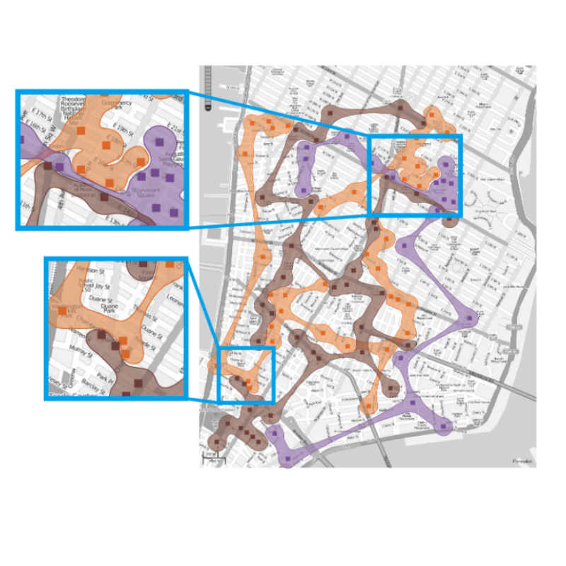
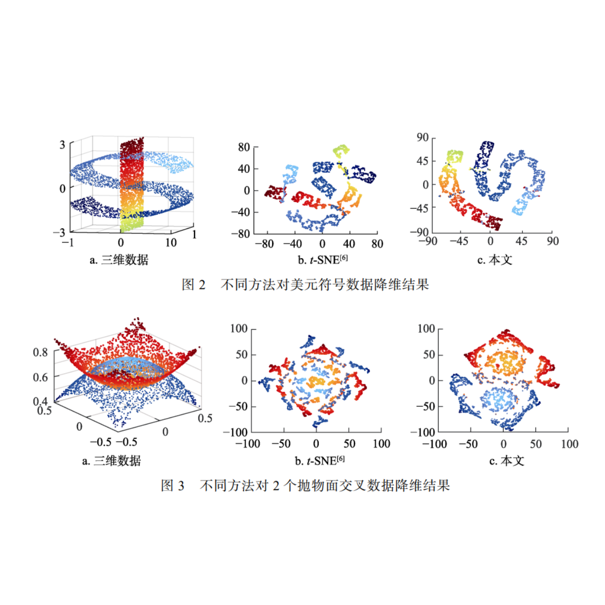

周亮
Liang Zhou, Ph.D.
Assistant Professor
Email: zhoulng at pku dot edu dot cn
My research interests include scientific and information visualization, visual analysis of health data, and mixed reality.
- Work Experience
-
National Institute of Health Data Science, Peking University- Assistant Professor
2020 - Now
SCI Institute, University of Utah - Research Associate
2019 - 2020
VISUS, University of Stuttgart - Research Associate
2015 - 2018
SCI Institute, University of Utah - Postdoc Researcher
2014 - 2015
- Education
-
University of Utah - Ph.D. in Computing
2008 - 2014 Advisor: Dr. Charles D. Hansen
- Teaching
-
Introduction to Health Data Science -- Medical Visualization and Visual
Analytics
Fall semesters
Visualization of Health DataFall semesters
Practice of Data VisualizationSpring semesters
- Publications
-
Journal and Conference Publications
Personal Protection Equipment Training as a Virtual Reality Game in Immersive Environments: Development Study and Pilot Randomized Controlled Trial
Liang Zhou, Haoyang Liu, Mengjie Fan, Jiahao Liu, Xingyao Yu, Xintian Zhao, and Shaoxing Zhang*.
JMIR Serious Games, 2025;13:e69021.Formula-S: Situated Visualization for Traditional Chinese Medicine Formula Learning
Zhiyue Wu, Suyuan Peng, Yan Zhu, and Liang Zhou*.
Chinese Medical Sciences Journal, DOI：10.24920/004462.
Eyeball Descending Identification via MRI-based Spatial Coordinates in Cases of Thyroid-associated Orbitopathy with Unilateral Upper Eyelid Retraction
Xinyi Gou, Yi Wang, Tianyuan Li, Lingli Zhou, Jianxiu Lian, Xiuying Zhang, Mengjie Fan,
Liang Zhou*, Jin Cheng*, and Nan Hong*.
(*: joint corresponding authors)
Quantitative Imaging in Medicine and Surgery, Vol. 15, No. 2.Visual analysis of multi-outcome causal graphs
Mengjie Fan, Jinlu Yu, Daniel Weiskopf, Nan Cao, Huai-Yu Wang, and Liang Zhou*.
IEEE Transactions on Visualization and Computer Graphics (VIS 2024).Visualization of Traditional Chinese Medicine Formulas: Development and Usability Study
Zhiyue Wu^, Suyuan Peng^, and Liang Zhou*(^: joint first authors, *: corresponding author).
JMIR Formative Research, 2023.Transcriptomic heterogeneity of skin across different anatomic sites
Yicen Yan, Jie Tian, Yang Wang, Yurong Li, Chong Zhang, Shenxi Zhang, Pingping Lin, Rui Peng, Chunxia Zhao, Le Zhuang, Binbin Lai*, Liang Zhou*, Guohong Zhang*, and Hang Li* (*: joint corresponding authors).
Journal of Investigative Dermatology, 2023.Angle-Uniform Parallel Coordinates
Kaiyi Zhang^, Liang Zhou^*, Lu Chen, Shitong He, Daniel Weiskopf, and Yunhai Wang (^: joint first authors, *: corresponding author).
Computational Visual Media, 2023.
Automatic Assessment of Adverse Drug Reaction Reports with Interactive Visual Exploration
Zongyang Gao^, Yu Yang^, Ruogu Meng, Jinyang Yu, and Liang Zhou* (^: joint first authors, *: corresponding author).
Scientific Reports, vol. 12, Article number: 6777 (2022).A Review of Three-Dimensional Medical Image Visualization
Liang Zhou^*, Mengjie Fan^, Charles Hansen, Chris R. Johnson, and Daniel Weiskopf (^: joint first authors, *: corresponding author).
Health Data Science, vol. 2022, Article ID 9840519.F2-Bubbles: Faithful Bubble Set Construction and Flexible Editing
Yunhai Wang, Da Cheng, Zhirui Wang, Jian Zhang, Liang Zhou, Gaoqi He, and Oliver Deussen.
IEEE Transactions on Visualization and Computer Graphics (VisWeek 2021), vol. 28, no. 1, pp. 422-432.中医病案可视分析
胡晓璇, 彭苏元, 侯海晶, 杨霓芝, 吕永杰, 周亮*.
计算机辅助设计与图形学学报, 33 ( 12 ): 1866-1875.面向复杂多流形高维数据的t-SNE降维方法
边荣正, 张鉴, 周亮, 蒋鹏, 陈宝权, 汪云海.
计算机辅助设计与图形学学报, 33 ( 11 ): 1746-1754.Data-Driven Space-Filling Curves
Liang Zhou, Chris Johnson, and Daniel Weiskopf.
IEEE Transactions on Visualization and Computer Graphics (SciVis 2020), vol. 27, no. 2, pp. 1591-1600.Implicit Multidimensional Projection of Local Subspaces
Rongzheng Bian, Yumeng Xue, Liang Zhou*, Jian Zhang, Baoquan Chen, Daniel Weiskopf, and Yunhai Wang* (joint corresponding authors).
IEEE Transactions on Visualization and Computer Graphics (InfoVis 2020), vol. 27, no. 2, pp. 1558-1568.Photographic High-Dynamic-Range Scalar Visualization
Liang Zhou, Marc Rivinius, Chris Johnson, and Daniel Weiskopf.
IEEE Transactions on Visualization and Computer Graphics, Vol. 26, No. 6, pp. 2156-2167.Spectral Visualization Sharpening
Liang Zhou, Rudolf Netzel, Daniel Weiskopf, and Chris Johnson.
ACM Symposium on Applied Perception 2019 (SAP '19), Paper 18.Perceptually Guided Contrast Enhancement Based on Viewing Distance
Liang Zhou, Daniel Weiskopf, and Chris Johnson.
Journal of Computer Languages, Vol 55, 100911.Multivariate Visualization of Particle Data
Liang Zhou and Daniel Weiskopf.
The European Journal of Physics Special Topics, Vol. 227, No. 14, pp. 1741-1755.Contrast Enhancement Based on Viewing Distance
Liang Zhou and Daniel Weiskopf.
VINCI '18 Proceedings of the 11th International Symposium on Visual Information Communication and Interaction, Pages 25-32 (Best Paper Award).Indexed-Points Parallel Coordinates Visualization of Multivariate Correlations
Liang Zhou and Daniel Weiskopf.
IEEE Transactions on Visualization and Computer Graphics, Vol. 24, No. 6, pp. 1997-2010 (Spotlight Article).A Survey of Colormaps in Visualization
Liang Zhou and Charles Hansen.
IEEE Transactions on Visualization and Computer Graphics, Vol. 22, No. 8, pp. 2051-2069 (Spotlight Article).Magnetotelluric investigation of the geothermal anomaly in Hailin, Mudanjiang, northeastern China
Lili Zhang, Tianyao Hao, Qibin Xiao, Jie Wang, Liang Zhou, Min Qi, Xiangpan Cui, and Ningxiao Cai.
Journal of Applied Geophysics, Volume 118, July 2015, pp. 47-65.GuideME: Slice-guided Semiautomatic Multivariate Exploration of Volumes
Liang Zhou and Charles Hansen.
Computer Graphics Forum (EuroVis2014), Vol. 33, No. 3, pp. 151 - 160.Transfer Function Design based on User Selected Samples for Intuitive Multivariate Volume Exploration
Liang Zhou and Charles Hansen.
Proceedings of the 2013 IEEE Pacific Visualization Symposium (PacificVis), pp. 73--80. 2013. Sydney, Australia.Transfer Function Combinations
Liang Zhou, Mathias Schott, and Charles Hansen.
Computers and Graphics, Vol. 36, No. 6, pp. 596--606. October, 2012.Extended Abstracts/Posters
- Professional Services
-
Reviewer
- IEEE Transactions on Visualization and Computer Graphics (TVCG)
- IEEE InfoVis (Special Issue of TVCG)
- IEEE SciVis (Special Issue of TVCG)
- EuroVis (Special Issue of Computer Graphics Forum)
- Computer Graphics Forum
- IEEE PacificVis Symposium
- IEEE Transactions on Multimedia
- IEEE Computer Graphics and Applications (CG&A)
- Computers and Graphics
- ChinaVis
- The Visual Computer
- Journal of Visual Languages and Computing
- Journal of Visualization
- The Eurographics Symposium on Parallel Graphics and Visualization (EGPGV)
- 《计算机辅助设计与图形学学报》